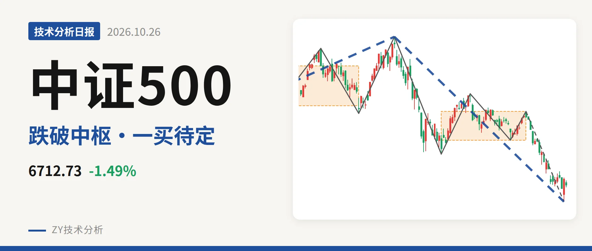
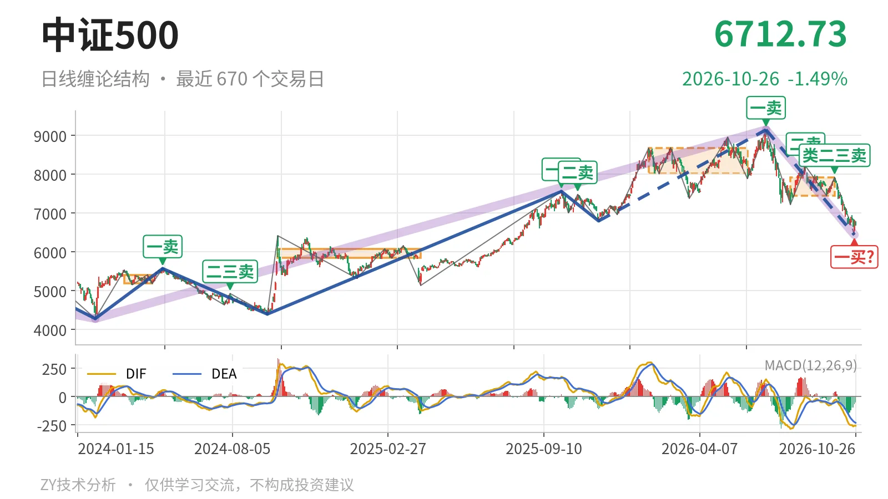
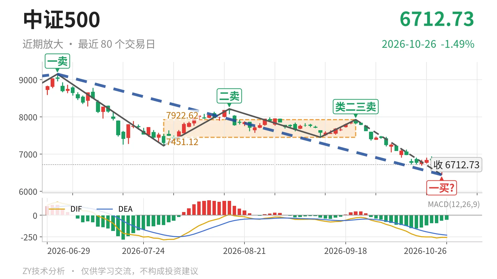

中证500｜中枢下破 7451反抽定强弱

最近日线中枢 7451.12—7922.62点，收盘位于中枢之下
一句话：今日仍在中枢下方，10月23日一买暂定，结构偏弱
📉 走势结构：日线下跌段延续，中枢下移
当前日线级别处于7月1日以来的下跌段，下跌线段没有被反向线段破坏。更大级别上，2024年2月5日至2026年7月1日从4281.24点升至9147.56点，随后转入7月1日至10月23日的下跌段，跌幅约29.6%。日线线段已出现5笔，仍运行在下跌结构中。最近日线笔中枢由1月26日至6月8日的8014.66—8671.35点，下移至7月30日至9月22日的7451.12—7922.62点。价格在中枢下方，这不是震荡结构。

🧭 中枢与位置：跌破最近中枢下沿
10月26日最新收盘6712.73点，低于最近日线笔中枢下沿7451.12点约9.9%。该中枢区间为7451.12—7922.62点，中轴7686.87点。中枢由7月30日至8月18日上涨笔、8月18日至9月11日下跌笔、9月11日至9月22日上涨笔构成。10月23日最低6440.29点已跌穿下沿，之后反抽仍在下沿下方。中枢下移后，上方压力看7451点附近。下方更早的线段中枢在5594.30—6263.16点，当前没有触及。
🎯 买卖点：10月23日一买暂定
10月23日6440.29点是日线笔级别暂定的一买。该买点所在笔为9月22日至10月23日的下跌笔，这一笔没有结束，一买会随这一笔的延续而变化。此前7月1日一卖9147.56点、8月18日二卖8211.31点、9月22日类二三卖7922.62点，卖点一个比一个低。之后价格继续创出新低，这些卖点只对应日线笔级别。线段级别2025年11月24日三买6797.50点已被跌破，2024年9月18日二买4397.16点仍远在下方。

⚖️ 背驰：新低不新弱
最近一笔下跌出现“新低不新弱”。比较9月22日至10月23日下跌笔与7月1日至7月30日下跌笔，价格低点从7221.95点下移至6440.29点，创出新低。但绿柱面积由2687降至1443，DIF低点由-285.2抬升至-263.4。空头动能没有同步放大。当前下跌笔仍在延续，背驰以仍在延续的走势为准。最新MACD的DIF为-256.9、DEA为-230.9、柱为-51.9，DIF仍在零轴下方。
🔎 关键位置观察：反抽看7451点
结构上关键观察位是最近日线中枢下沿7451点附近。若从6440.29点开始的反抽回不到7451点上方，结构上构成对7月30日至9月22日中枢的三卖，下跌段继续。若重新站上7451点，跌破中枢更可能只是中枢扩展，下跌力度会减弱。结构判断偏弱：价格在中枢下方、DIF零轴下，仅有一个暂定一买和新低不新弱，未见回到中枢的修复。
⚠️ 本文为基于公开行情数据的缠论技术结构记录，由程序自动计算并生成，仅供学习交流，不构成任何投资建议。市场有风险，投资需谨慎。